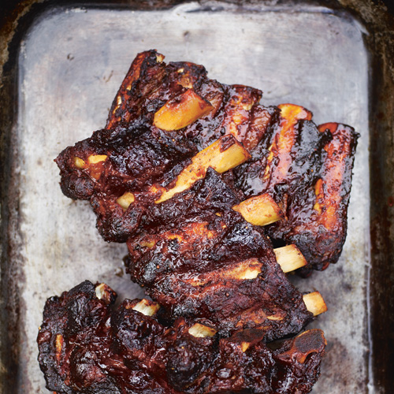

Wat zijn Spareribs nu eigenlijk?
Spareribs zijn een stuk vlees van een varken of koe waarbij het deel van de ribben worden gebruikt. De Sparerib van de barbeque komt oficieel vanuit America, maar de gekookte/gestoomde versie komt uit China. Het vlees wordt met bot en al geserveerd als een lap vlees. Dit soort vlees wordt vaak afgekloven.
Ingrediënten
voor dit gerecht heb je de volgende ingrediënten nodig
Voor 4-6 personen
- 250 ml donkere sojasaus
- 125 ml water
- 350 g suiker
- 55 ml hoisinsaus
- 8 grote tenen knoflook, geperst
- 2 kg runderribstuk
Bereiding
- Roer de sojasaus, suiker, hoisinsaus, geperste knoflook en het water door elkaar en doe alles in een marineerzak. Leg een ribstuk in de zak. Snijd, als de ribben te groot zijn, liever in het vlees dan in het bot. Sluit de zak, verdeel de vloeistof en leg het voor 24 uur in de koelkast.
- Is het ribstuk klaar om te worden gebakken, haal het dan uit de zak en leg het in de mand van een grote stoompan of in twee kleine. Bewaar de marinade, breng die aan de kook en laat 5 minuten zacht koken in een kleine pan.
- Stoom het ribstuk zachtjes gedurende 1 uur en 15 minuten of tot het mals is. Haal het vlees na de kooktijd voorzichtig uit de stoompan.
- Zet de barbeque aan en wacht tot het op een goede temperatuur is. Daarna leg je de sparerib op de barbeque
- Strijk na 1 minuut de helft van de bewaarde marinade over de sparerib en bak het vlees totdat het een mooie bruingeroosterde kleur krijgt.
- Haal het stuk sparerib van de barbeque en smeer de bovenkant voor de laatste keer in met de overgebleven marinade. Leg het dan een paar minuten op de barbeque met de bovenkant naar boven tot hij knapperig en heel heet is. Laat daarna de sparerib 5 minuten rusten en serveer het dan.